Ensayo 7
This essay shows the postharvest behavior of the fruits at temperatures of 5 and 9 °C for different physical and chemical variables.
Introduction
Fruit and vegetable losses between harvest times and their potential consumption are considerable. Specifically, fresh fruits are living tissues that acquire an independent life once harvested. Minimizing these losses depends on biological factors such as the species or variety, the plant organ, associated pathologies, harvest time, relative moisture content and, in the specific case of the fruits, whether they are climacteric or not, among many others. The decrease or lethargy of physiological, physical and pathological processes are essential to achieve a longer lifespan. The knowledge of the production of ethylene and carbon dioxide through postharvest respiration is essential to determine whether the fruits show climacteric behavior or not. Through respiration, they use their metabolic reserves accumulated during the growth and maturation phase and can give continuity to the synthesis processes necessary for their survival. However, the loss of these food reserves also means accelerated senescence and decreased product shelf life. In turn, environmental factors such as temperature, humidity or radiation combined with the aforementioned factors determine the best or worst state of conservation. Thus, the decrease in the temperature of the product and the reduction in the time in which the optimum storage temperature is reached play an essential role, since they are the factors that most influence the decrease in these processes that affect the reactions and chemical composition. as well as physical integrity.
The fruit of H. edulis would have great potential as a functional food due to its compositional profile and outstanding nutritional value that is very favorable for health. However, there are few antecedents regarding the postharvest behavior of the fruits and forms of storage, essential knowledge when thinking about the use of these fruits both as fresh products and in processed products.
From the application of postharvest technologies it is possible to describe, understand and execute treatments that avoid major losses and preserve the quality of the nutritional profile and the desired sensory aspects to be accepted by consumers.
Goals
Evaluate the physical characteristics of the fruits at different times and storage conditions.
Evaluate the chemical characteristics of the fruits at different times and storage conditions: soluble solids-titratable acidity, ethylene.
Define the most appropriate preservation method for these fruits and their characterization as functional food.
Complete analysis of the essay:
WEIGHT
Descriptive statistics
Boxplot
With standard deviation
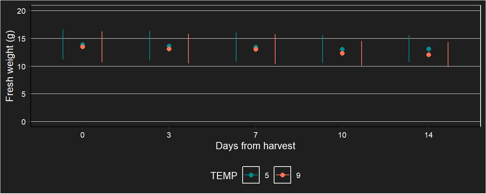
Profile chart
Behavior by fruit
Inferential statistics WEIGHT
Correlation over time

Selection of models by AIC
## df AIC
## m1p 12 138.314098
## m2p 13 127.062036
## m3p 12 -136.991774
## m4p 13 -136.483887
## m5p 21 -270.309382
## m6p 12 138.314098The m5p model is the best in terms of AIC
Assumptions
##
## Shapiro-Wilk normality test
##
## data: m5p$residuals
## W = 0.9865874, p-value = 0.000629931Marginal covariance matrix
## Marginal variance covariance matrix
## [,1] [,2] [,3] [,4] [,5]
## [1,] 6.8445 6.8392 6.8341 6.8217 6.8024
## [2,] 6.8392 6.8445 6.8428 6.8367 6.8231
## [3,] 6.8341 6.8428 6.8445 6.8409 6.8303
## [4,] 6.8217 6.8367 6.8409 6.8445 6.8390
## [5,] 6.8024 6.8231 6.8303 6.8390 6.8445
## Standard Deviations: 2.6162 2.6162 2.6162 2.6162 2.6162Anova type III
## Analysis of Deviance Table (Type III tests)
##
## Response: PESO
## Df Chisq Pr(>Chisq)
## (Intercept) 1 1407.93987 < 2e-16 ***
## TEMP 1 0.58585 0.44403
## DIA 4 726.46878 < 2e-16 ***
## TEMP:DIA 4 176.77090 < 2e-16 ***
## ---
## Signif. codes: 0 '***' 0.001 '**' 0.01 '*' 0.05 '.' 0.1 ' ' 1There is interaction Time * Temperature. Interaction comparisons are made and simple effects are analyzed.
Interaction comparisons
## contrast estimate SE df t.ratio p.value
## TEMP5 DIA0 - TEMP9 DIA0 0.411436595 0.537538799 401 0.765 0.9990
## TEMP5 DIA0 - TEMP5 DIA3 0.241909797 0.014462754 401 16.726 <.0001
## TEMP5 DIA0 - TEMP9 DIA3 0.749258817 0.537538799 401 1.394 0.9287
## TEMP5 DIA0 - TEMP5 DIA7 0.432372127 0.020150196 401 21.457 <.0001
## TEMP5 DIA0 - TEMP9 DIA7 0.843858817 0.537538799 401 1.570 0.8619
## TEMP5 DIA0 - TEMP5 DIA10 0.696171982 0.029708227 401 23.434 <.0001
## TEMP5 DIA0 - TEMP9 DIA10 1.112269354 0.537596150 401 2.069 0.5506
## TEMP5 DIA0 - TEMP5 DIA14 0.963240391 0.040068140 401 24.040 <.0001
## TEMP5 DIA0 - TEMP9 DIA14 1.334814017 0.537822090 401 2.482 0.2814
## TEMP9 DIA0 - TEMP5 DIA3 -0.169526798 0.537558314 401 -0.315 1.0000
## TEMP9 DIA0 - TEMP9 DIA3 0.337822222 0.015376691 401 21.970 <.0001
## TEMP9 DIA0 - TEMP5 DIA7 0.020935532 0.537565665 401 0.039 1.0000
## TEMP9 DIA0 - TEMP9 DIA7 0.432422222 0.021455332 401 20.155 <.0001
## TEMP9 DIA0 - TEMP5 DIA10 0.284735387 0.537579593 401 0.530 1.0000
## TEMP9 DIA0 - TEMP9 DIA10 0.700832759 0.032801768 401 21.366 <.0001
## TEMP9 DIA0 - TEMP5 DIA14 0.551803796 0.537592385 401 1.026 0.9905
## TEMP9 DIA0 - TEMP9 DIA14 0.923377422 0.046624562 401 19.805 <.0001
## TEMP5 DIA3 - TEMP9 DIA3 0.507349020 0.537558314 401 0.944 0.9949
## TEMP5 DIA3 - TEMP5 DIA7 0.190462330 0.008288244 401 22.980 <.0001
## TEMP5 DIA3 - TEMP9 DIA7 0.601949020 0.537558314 401 1.120 0.9825
## TEMP5 DIA3 - TEMP5 DIA10 0.454262185 0.017363973 401 26.161 <.0001
## TEMP5 DIA3 - TEMP9 DIA10 0.870359557 0.537615663 401 1.619 0.8384
## TEMP5 DIA3 - TEMP5 DIA14 0.721330594 0.028554157 401 25.262 <.0001
## TEMP5 DIA3 - TEMP9 DIA14 1.092904220 0.537841595 401 2.032 0.5769
## TEMP9 DIA3 - TEMP5 DIA7 -0.316886691 0.537565665 401 -0.589 0.9999
## TEMP9 DIA3 - TEMP9 DIA7 0.094600000 0.008796311 401 10.755 <.0001
## TEMP9 DIA3 - TEMP5 DIA10 -0.053086835 0.537579593 401 -0.099 1.0000
## TEMP9 DIA3 - TEMP9 DIA10 0.363010537 0.020250061 401 17.926 <.0001
## TEMP9 DIA3 - TEMP5 DIA14 0.213981573 0.537592385 401 0.398 1.0000
## TEMP9 DIA3 - TEMP9 DIA14 0.585555200 0.035439187 401 16.523 <.0001
## TEMP5 DIA7 - TEMP9 DIA7 0.411486691 0.537565665 401 0.765 0.9990
## TEMP5 DIA7 - TEMP5 DIA10 0.263799855 0.011698549 401 22.550 <.0001
## TEMP5 DIA7 - TEMP9 DIA10 0.679897227 0.537623014 401 1.265 0.9608
## TEMP5 DIA7 - TEMP5 DIA14 0.530868264 0.023326413 401 22.758 <.0001
## TEMP5 DIA7 - TEMP9 DIA14 0.902441890 0.537848942 401 1.678 0.8074
## TEMP9 DIA7 - TEMP5 DIA10 -0.147686835 0.537579593 401 -0.275 1.0000
## TEMP9 DIA7 - TEMP9 DIA10 0.268410537 0.014828837 401 18.101 <.0001
## TEMP9 DIA7 - TEMP5 DIA14 0.119381573 0.537592385 401 0.222 1.0000
## TEMP9 DIA7 - TEMP9 DIA14 0.490955200 0.030615180 401 16.036 <.0001
## TEMP5 DIA10 - TEMP9 DIA10 0.416097372 0.537636940 401 0.774 0.9989
## TEMP5 DIA10 - TEMP5 DIA14 0.267068409 0.015004288 401 17.799 <.0001
## TEMP5 DIA10 - TEMP9 DIA14 0.638642035 0.537862863 401 1.187 0.9740
## TEMP9 DIA10 - TEMP5 DIA14 -0.149028963 0.537649730 401 -0.277 1.0000
## TEMP9 DIA10 - TEMP9 DIA14 0.222544663 0.020741944 401 10.729 <.0001
## TEMP5 DIA14 - TEMP9 DIA14 0.371573626 0.537875648 401 0.691 0.9996
##
## Degrees-of-freedom method: df.error
## P value adjustment: tukey method for comparing a family of 10 estimatesSignificant differences are given by days.
Plot with standard error of the model by treatment.
Simple effects
## DIA = 0:
## contrast estimate SE df t.ratio p.value
## TEMP5 - TEMP9 0.411436595 0.537538799 401 0.765 0.4445
##
## DIA = 3:
## contrast estimate SE df t.ratio p.value
## TEMP5 - TEMP9 0.507349020 0.537558314 401 0.944 0.3458
##
## DIA = 7:
## contrast estimate SE df t.ratio p.value
## TEMP5 - TEMP9 0.411486691 0.537565665 401 0.765 0.4444
##
## DIA = 10:
## contrast estimate SE df t.ratio p.value
## TEMP5 - TEMP9 0.416097372 0.537636940 401 0.774 0.4394
##
## DIA = 14:
## contrast estimate SE df t.ratio p.value
## TEMP5 - TEMP9 0.371573626 0.537875648 401 0.691 0.4901
##
## Degrees-of-freedom method: df.error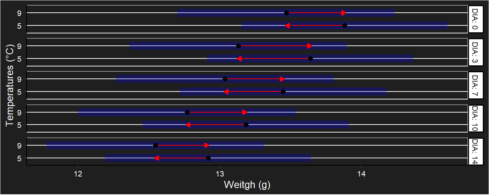
Conclusion Weigth
NO significant differences were found between temperatures. There is no significant evidence to infer that a temperature of 5°C decreases weight loss.
COLOR (*L)
Descriptive statistics *L
Boxplot
Graph with standard deviation

Profile chart
Behavior by fruit
Inferential statistics *L
Correlation over time

Selection of models by AIC
## df AIC
## m1L 12 2510.28222
## m2L 16 2514.86996
## m3L 12 2511.89337
## m4L 16 2512.29958
## m5L 21 2474.97445
## m6L 12 2510.28222The m5L model is the best in terms of AIC.
Assumptions
 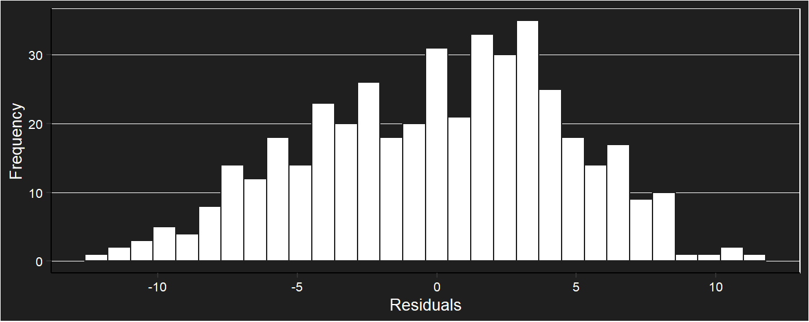
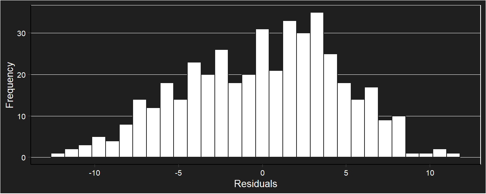
##
## Shapiro-Wilk normality test
##
## data: L_ajuste$residuos
## W = 0.9893121, p-value = 0.00286622Marginal covariance matrix
## Marginal variance covariance matrix
## [,1] [,2] [,3] [,4] [,5]
## [1,] 21.3650 14.9480 1.7303 8.8909 8.1131
## [2,] 14.9480 21.3650 2.5003 8.8632 6.4293
## [3,] 1.7303 2.5003 21.3650 7.4134 4.3699
## [4,] 8.8909 8.8632 7.4134 21.3650 11.9690
## [5,] 8.1131 6.4293 4.3699 11.9690 21.3650
## Standard Deviations: 4.6222 4.6222 4.6222 4.6222 4.6222Anova type III
## Analysis of Deviance Table (Type III tests)
##
## Response: L
## Df Chisq Pr(>Chisq)
## (Intercept) 1 9140.98438 < 2e-16 ***
## TEMP 1 0.20961 0.647072
## DIA 4 90.33470 < 2e-16 ***
## TEMP:DIA 4 17.02436 0.001912 **
## ---
## Signif. codes: 0 '***' 0.001 '**' 0.01 '*' 0.05 '.' 0.1 ' ' 1There is interaction Time * Temperature. Interaction comparisons are made and simple effects are analyzed.
Interaction comparisons
## contrast estimate SE df t.ratio p.value
## TEMP5 DIA0 - TEMP9 DIA0 0.42517960 0.928676589 416 0.458 1.0000
## TEMP5 DIA0 - TEMP5 DIA3 1.09562327 0.510143321 416 2.148 0.4949
## TEMP5 DIA0 - TEMP9 DIA3 -0.06649305 0.925001633 416 -0.072 1.0000
## TEMP5 DIA0 - TEMP5 DIA7 -6.61214980 0.876778646 416 -7.541 <.0001
## TEMP5 DIA0 - TEMP9 DIA7 -8.08387528 0.920557456 416 -8.781 <.0001
## TEMP5 DIA0 - TEMP5 DIA10 -3.92490350 0.716768604 416 -5.476 <.0001
## TEMP5 DIA0 - TEMP9 DIA10 -7.84025408 1.059105336 416 -7.403 <.0001
## TEMP5 DIA0 - TEMP5 DIA14 -3.91431831 0.759998203 416 -5.150 <.0001
## TEMP5 DIA0 - TEMP9 DIA14 -5.12195663 1.116650392 416 -4.587 0.0003
## TEMP9 DIA0 - TEMP5 DIA3 0.67044367 0.924714933 416 0.725 0.9993
## TEMP9 DIA0 - TEMP9 DIA3 -0.49167265 0.515693823 416 -0.953 0.9945
## TEMP9 DIA0 - TEMP5 DIA7 -7.03732940 0.925105107 416 -7.607 <.0001
## TEMP9 DIA0 - TEMP9 DIA7 -8.50905488 0.877583202 416 -9.696 <.0001
## TEMP9 DIA0 - TEMP5 DIA10 -4.35008310 0.934225372 416 -4.656 0.0002
## TEMP9 DIA0 - TEMP9 DIA10 -8.26543367 0.885358015 416 -9.336 <.0001
## TEMP9 DIA0 - TEMP5 DIA14 -4.33949791 0.952860625 416 -4.554 0.0003
## TEMP9 DIA0 - TEMP9 DIA14 -5.54713623 0.969235596 416 -5.723 <.0001
## TEMP5 DIA3 - TEMP9 DIA3 -1.16211632 0.921024170 416 -1.262 0.9614
## TEMP5 DIA3 - TEMP5 DIA7 -7.70777307 0.852133292 416 -9.045 <.0001
## TEMP5 DIA3 - TEMP9 DIA7 -9.17949855 0.916560707 416 -10.015 <.0001
## TEMP5 DIA3 - TEMP5 DIA10 -5.02052677 0.713020689 416 -7.041 <.0001
## TEMP5 DIA3 - TEMP9 DIA10 -8.93587734 1.055633275 416 -8.465 <.0001
## TEMP5 DIA3 - TEMP5 DIA14 -5.00994158 0.797230056 416 -6.284 <.0001
## TEMP5 DIA3 - TEMP9 DIA14 -6.21757990 1.113357803 416 -5.585 <.0001
## TEMP9 DIA3 - TEMP5 DIA7 -6.54565675 0.921415907 416 -7.104 <.0001
## TEMP9 DIA3 - TEMP9 DIA7 -8.01738223 0.852837387 416 -9.401 <.0001
## TEMP9 DIA3 - TEMP5 DIA10 -3.85841045 0.930572330 416 -4.146 0.0017
## TEMP9 DIA3 - TEMP9 DIA10 -7.77376102 0.881978089 416 -8.814 <.0001
## TEMP9 DIA3 - TEMP5 DIA14 -3.84782526 0.949279298 416 -4.053 0.0024
## TEMP9 DIA3 - TEMP9 DIA14 -5.05546358 1.000580278 416 -5.053 <.0001
## TEMP5 DIA7 - TEMP9 DIA7 -1.47172548 0.916954351 416 -1.605 0.8453
## TEMP5 DIA7 - TEMP5 DIA10 2.68724630 0.749558592 416 3.585 0.0137
## TEMP5 DIA7 - TEMP9 DIA10 -1.22810427 1.055975077 416 -1.163 0.9774
## TEMP5 DIA7 - TEMP5 DIA14 2.69783149 0.844204875 416 3.196 0.0479
## TEMP5 DIA7 - TEMP9 DIA14 1.49019317 1.113681889 416 1.338 0.9442
## TEMP9 DIA7 - TEMP5 DIA10 4.15897178 0.926154884 416 4.491 0.0004
## TEMP9 DIA7 - TEMP9 DIA10 0.24362120 0.894576041 416 0.272 1.0000
## TEMP9 DIA7 - TEMP5 DIA14 4.16955697 0.944949308 416 4.412 0.0005
## TEMP9 DIA7 - TEMP9 DIA14 2.96191864 1.028894300 416 2.879 0.1149
## TEMP5 DIA10 - TEMP9 DIA10 -3.91535058 1.063974131 416 -3.680 0.0098
## TEMP5 DIA10 - TEMP5 DIA14 0.01058519 0.655258169 416 0.016 1.0000
## TEMP5 DIA10 - TEMP9 DIA14 -1.19705314 1.121269342 416 -1.068 0.9875
## TEMP9 DIA10 - TEMP5 DIA14 3.92593577 1.080373675 416 3.634 0.0116
## TEMP9 DIA10 - TEMP9 DIA14 2.71829744 0.891182784 416 3.050 0.0728
## TEMP5 DIA14 - TEMP9 DIA14 -1.20763833 1.136842673 416 -1.062 0.9879
##
## Degrees-of-freedom method: df.error
## P value adjustment: tukey method for comparing a family of 10 estimatesGraph with standard error of the model for each treatment.
Simple effects
## DIA = 0:
## contrast estimate SE df t.ratio p.value
## TEMP5 - TEMP9 0.42517960 0.928676589 416 0.458 0.6473
##
## DIA = 3:
## contrast estimate SE df t.ratio p.value
## TEMP5 - TEMP9 -1.16211632 0.921024170 416 -1.262 0.2077
##
## DIA = 7:
## contrast estimate SE df t.ratio p.value
## TEMP5 - TEMP9 -1.47172548 0.916954351 416 -1.605 0.1092
##
## DIA = 10:
## contrast estimate SE df t.ratio p.value
## TEMP5 - TEMP9 -3.91535058 1.063974131 416 -3.680 0.0003
##
## DIA = 14:
## contrast estimate SE df t.ratio p.value
## TEMP5 - TEMP9 -1.20763833 1.136842673 416 -1.062 0.2887
##
## Degrees-of-freedom method: df.errorConclusion *L
Only at 10 days there were significant differences between temperatures.
COLOR (*a)
Descriptive statistics *a
Boxplot
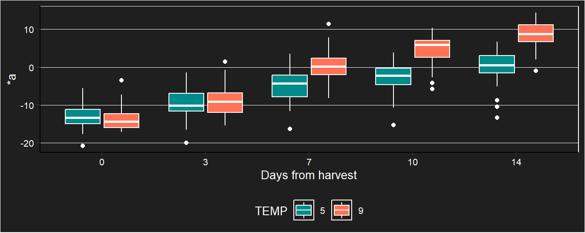
Graph with standard deviation
Profile chart
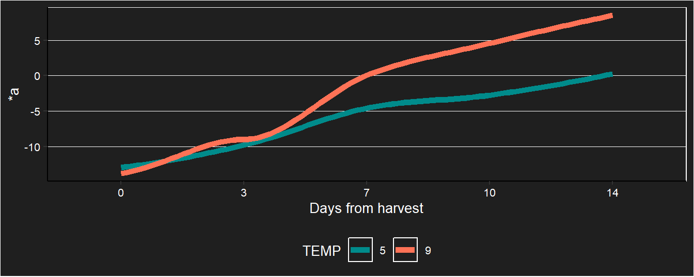
Behavior by fruit
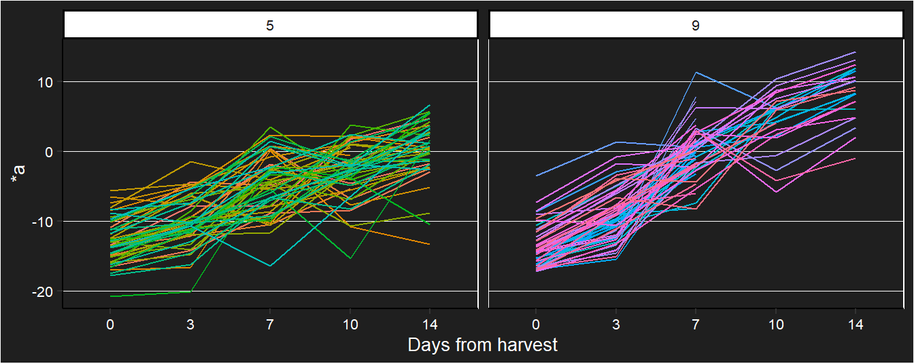
Inferential statistics *a
Correlation over time

Selection of models by AIC
## df AIC
## m1a 12 2372.18558
## m2a 16 2358.44584
## m3a 12 2390.28051
## m4a 16 2370.49624
## m5a 21 2249.60472The model m5a is the best in terms of AIC
Assumptions
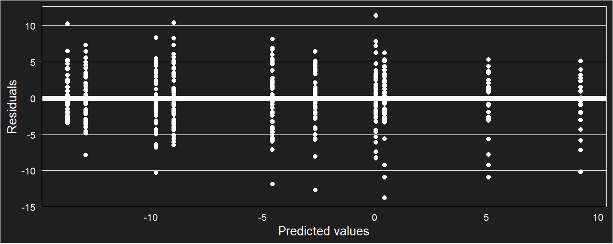

##
## Shapiro-Wilk normality test
##
## data: a_ajuste$residuos
## W = 0.9891595, p-value = 0.00242111Marginal covariance matrix
## Marginal variance covariance matrix
## [,1] [,2] [,3] [,4] [,5]
## [1,] 14.3240 12.22400 2.22070 4.3091 4.40050
## [2,] 12.2240 14.32400 0.90675 7.1619 6.85190
## [3,] 2.2207 0.90675 14.32400 -1.6500 -0.68112
## [4,] 4.3091 7.16190 -1.65000 14.3240 8.84850
## [5,] 4.4005 6.85190 -0.68112 8.8485 14.32400
## Standard Deviations: 3.7847 3.7847 3.7847 3.7847 3.7847Anova
## Analysis of Deviance Table (Type III tests)
##
## Response: a
## Df Chisq Pr(>Chisq)
## (Intercept) 1 582.21867 <2e-16 ***
## TEMP 1 1.18568 0.2762
## DIA 4 460.48647 <2e-16 ***
## TEMP:DIA 4 106.91642 <2e-16 ***
## ---
## Signif. codes: 0 '***' 0.001 '**' 0.01 '*' 0.05 '.' 0.1 ' ' 1There is interaction Time * Temperature. Interaction comparisons are made and simple effects are analyzed.
Interaction comparisons
## DIA = 0:
## contrast estimate SE df t.ratio p.value
## TEMP5 - TEMP9 0.82421854 0.756935935 420 1.089 0.2768
##
## DIA = 3:
## contrast estimate SE df t.ratio p.value
## TEMP5 - TEMP9 -0.80382018 0.756933618 420 -1.062 0.2889
##
## DIA = 7:
## contrast estimate SE df t.ratio p.value
## TEMP5 - TEMP9 -4.61796084 0.756911358 420 -6.101 <.0001
##
## DIA = 10:
## contrast estimate SE df t.ratio p.value
## TEMP5 - TEMP9 -7.76165970 0.872026996 420 -8.901 <.0001
##
## DIA = 14:
## contrast estimate SE df t.ratio p.value
## TEMP5 - TEMP9 -8.78040559 0.914005889 420 -9.607 <.0001
##
## Degrees-of-freedom method: df.errorGraph with standard error of the model for each treatment.
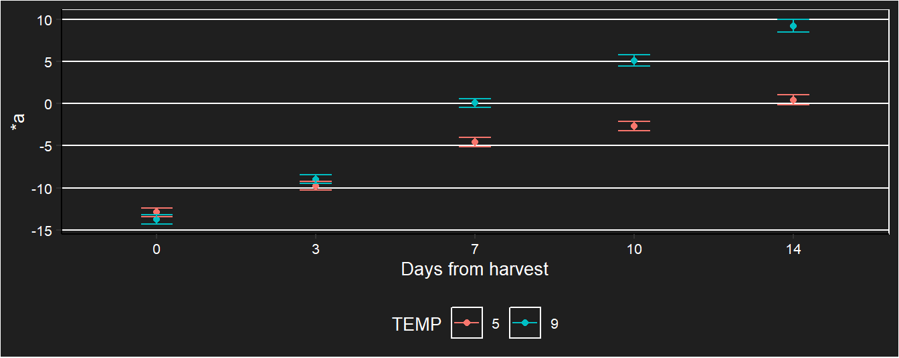
Simple effects
## DIA = 0:
## contrast estimate SE df t.ratio p.value
## TEMP5 - TEMP9 0.82421854 0.756935935 420 1.089 0.2768
##
## DIA = 3:
## contrast estimate SE df t.ratio p.value
## TEMP5 - TEMP9 -0.80382018 0.756933618 420 -1.062 0.2889
##
## DIA = 7:
## contrast estimate SE df t.ratio p.value
## TEMP5 - TEMP9 -4.61796084 0.756911358 420 -6.101 <.0001
##
## DIA = 10:
## contrast estimate SE df t.ratio p.value
## TEMP5 - TEMP9 -7.76165970 0.872026996 420 -8.901 <.0001
##
## DIA = 14:
## contrast estimate SE df t.ratio p.value
## TEMP5 - TEMP9 -8.78040559 0.914005889 420 -9.607 <.0001
##
## Degrees-of-freedom method: df.error
Conclusion *a
After 7 days there were significant differences between temperatures.
COLOR (*b)
Descriptive statistics *b
Boxplot
Graph with standard deviation
Profile chart
Behavior by fruit
Inferential statistics *b
Correlation over time

Selection of models by AIC
## df AIC
## m1b 12 2736.97179
## m2b 16 2739.45926
## m3b 12 2748.09394
## m4b 16 2749.25164
## m5b 21 2697.30326The model m5b is the best in terms of AIC
Assumptions
##
## Shapiro-Wilk normality test
##
## data: b_ajuste$residuos
## W = 0.9886859, p-value = 0.00175275Marginal covariance matrix
## Marginal variance covariance matrix
## [,1] [,2] [,3] [,4] [,5]
## [1,] 32.404 21.01400 -1.10200 13.18500 13.2830
## [2,] 21.014 32.40400 0.73093 13.61100 9.5937
## [3,] -1.102 0.73093 32.40400 0.23777 2.6330
## [4,] 13.185 13.61100 0.23777 32.40400 17.6790
## [5,] 13.283 9.59370 2.63300 17.67900 32.4040
## Standard Deviations: 5.6925 5.6925 5.6925 5.6925 5.6925Anova
## Analysis of Deviance Table (Type III tests)
##
## Response: b
## Df Chisq Pr(>Chisq)
## (Intercept) 1 4122.36261 < 2.22e-16 ***
## TEMP 1 0.33010 0.5656
## DIA 4 109.18617 < 2.22e-16 ***
## TEMP:DIA 4 40.52077 3.3775e-08 ***
## ---
## Signif. codes: 0 '***' 0.001 '**' 0.01 '*' 0.05 '.' 0.1 ' ' 1There is interaction Time * Temperature. Interaction comparisons are made and simple effects are analyzed.
Interaction comparisons
## DIA = 0:
## contrast estimate SE df t.ratio p.value
## TEMP5 - TEMP9 0.65411569 1.13849452 420 0.575 0.5659
##
## DIA = 3:
## contrast estimate SE df t.ratio p.value
## TEMP5 - TEMP9 1.95768053 1.13838683 420 1.720 0.0862
##
## DIA = 7:
## contrast estimate SE df t.ratio p.value
## TEMP5 - TEMP9 -4.13128864 1.13845628 420 -3.629 0.0003
##
## DIA = 10:
## contrast estimate SE df t.ratio p.value
## TEMP5 - TEMP9 -6.33643450 1.33773213 420 -4.737 <.0001
##
## DIA = 14:
## contrast estimate SE df t.ratio p.value
## TEMP5 - TEMP9 -2.59715247 1.40125776 420 -1.853 0.0645
##
## Degrees-of-freedom method: df.errorGraph with standard error of the model for each treatment.
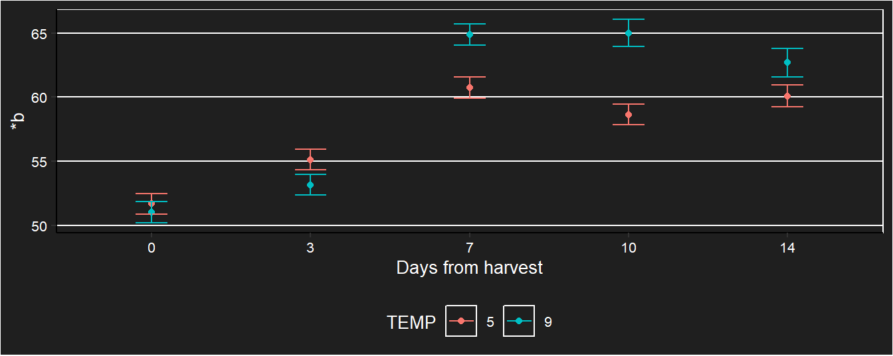
Simple effects
## DIA = 0:
## contrast estimate SE df t.ratio p.value
## TEMP5 - TEMP9 0.65411569 1.13849452 420 0.575 0.5659
##
## DIA = 3:
## contrast estimate SE df t.ratio p.value
## TEMP5 - TEMP9 1.95768053 1.13838683 420 1.720 0.0862
##
## DIA = 7:
## contrast estimate SE df t.ratio p.value
## TEMP5 - TEMP9 -4.13128864 1.13845628 420 -3.629 0.0003
##
## DIA = 10:
## contrast estimate SE df t.ratio p.value
## TEMP5 - TEMP9 -6.33643450 1.33773213 420 -4.737 <.0001
##
## DIA = 14:
## contrast estimate SE df t.ratio p.value
## TEMP5 - TEMP9 -2.59715247 1.40125776 420 -1.853 0.0645
##
## Degrees-of-freedom method: df.error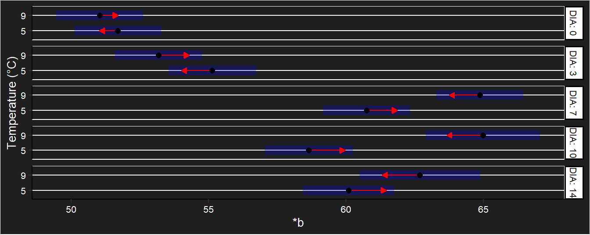 #### Conclusion *b At 7 and 10 days there were significant differences between temperatures.
Summary table

Compression
Force (N)
Boxplot
Model
## df AIC
## m1FU 7 115.673188
## m2FU 12 100.640911
## m3FU 8 109.785796
## m4FU 9 116.079889Assumptions
##
## Shapiro-Wilk normality test
##
## data: e
## W = 0.9937282, p-value = 0.86126Anova
## Denom. DF: 117
## numDF F-value p-value
## (Intercept) 1 4702.23296 <.0001
## DIA 2 211.15545 <.0001
## TEMP 1 0.47243 0.4932
## DIA:TEMP 2 0.41106 0.6639No hay interacción. El factor DIA es significativo.
Efectos principales
## contrast estimate SE df lower.CL upper.CL
## DIA0 - DIA7 0.807597683 0.0763980275 112 0.626131343 0.989064023
## DIA0 - DIA14 1.184460056 0.0691994075 112 1.020092420 1.348827693
## DIA7 - DIA14 0.376862373 0.0753605888 112 0.197860235 0.555864511
##
## Results are averaged over the levels of: TEMP
## Degrees-of-freedom method: df.error
## Results are given on the log (not the response) scale.
## Confidence level used: 0.95
## Conf-level adjustment: tukey method for comparing a family of 3 estimatesConclusion Fuerza
Sólo se encontró diferencia en el efecto principal para el factor tiempo.
Gradiente (N/mm)
Boxplot
Model
## df AIC
## m1GR 7 113.9740080
## m2GR 12 99.2678005
## m3GR 8 110.2878575
## m4GR 9 115.2624250Assumptions
##
## Shapiro-Wilk normality test
##
## data: e
## W = 0.9868544, p-value = 0.304839Anova
## Denom. DF: 113
## numDF F-value p-value
## (Intercept) 1 318.103902 <.0001
## DIA 2 124.810655 <.0001
## TEMP 1 0.785523 0.3773
## DIA:TEMP 2 0.186874 0.8298There is no interaction. The days factor is significant.
Principal effects
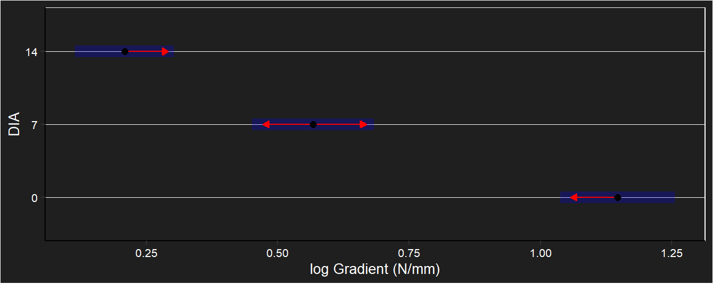
## contrast estimate SE df lower.CL upper.CL
## DIA0 - DIA7 0.579453601 0.0804902622 108 0.388171855 0.770735347
## DIA0 - DIA14 0.938484926 0.0728062907 108 0.765463817 1.111506035
## DIA7 - DIA14 0.359031325 0.0755130409 108 0.179577737 0.538484912
##
## Results are averaged over the levels of: TEMP
## Degrees-of-freedom method: df.error
## Results are given on the log (not the response) scale.
## Confidence level used: 0.95
## Conf-level adjustment: tukey method for comparing a family of 3 estimatesConclusion Gradient
A difference was only found in the main effect for day factor.
Distance F max (mm)
Boxplot
Model
## Call:
## aov(formula = DI ~ DIA * TEMP, data = data)
##
## Terms:
## DIA TEMP DIA:TEMP Residuals
## Sum of Squares 10.68698667 0.00020378 0.55651573 11.12620978
## Deg. of Freedom 2 1 2 113
##
## Residual standard error: 0.313786605
## Estimated effects may be unbalancedAssumptions
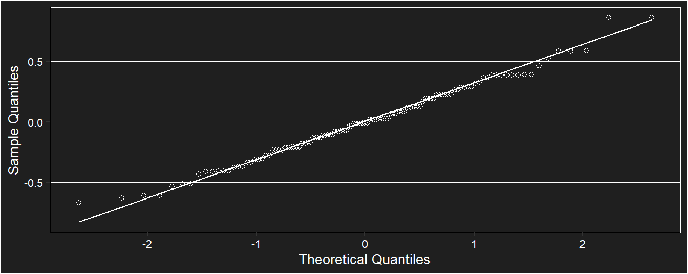
##
## Shapiro-Wilk normality test
##
## data: e
## W = 0.9904326, p-value = 0.579647## Levene's Test for Homogeneity of Variance (center = median)
## Df F value Pr(>F)
## group 5 1.88715 0.10205
## 113Anova
## Analysis of Variance Table
##
## Response: DI
## Df Sum Sq Mean Sq F value Pr(>F)
## DIA 2 10.686987 5.343493 54.26958 < 2e-16 ***
## TEMP 1 0.000204 0.000204 0.00207 0.963795
## DIA:TEMP 2 0.556516 0.278258 2.82604 0.063442 .
## Residuals 113 11.126210 0.098462
## ---
## Signif. codes: 0 '***' 0.001 '**' 0.01 '*' 0.05 '.' 0.1 ' ' 1Non-significant interaction.
Principal effects
## contrast estimate SE df lower.CL upper.CL
## DIA0 - DIA7 0.656551957 0.0743261137 113 0.480027981 0.833075932
## DIA0 - DIA14 0.723271222 0.0743268077 113 0.546745598 0.899796845
## DIA7 - DIA14 0.066719265 0.0669679771 113 -0.092329190 0.225767720
##
## Results are averaged over the levels of: TEMP
## Confidence level used: 0.95
## Conf-level adjustment: tukey method for comparing a family of 3 estimatesConclusion Distance F max
A difference was only found in the main effect for day factor.
Summary table

Puncture
General graphs
Fruit losses
Descriptive statistics
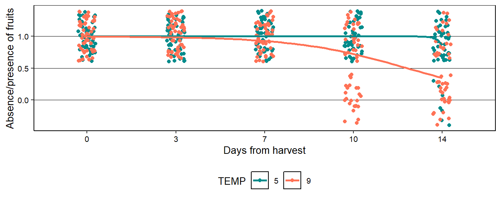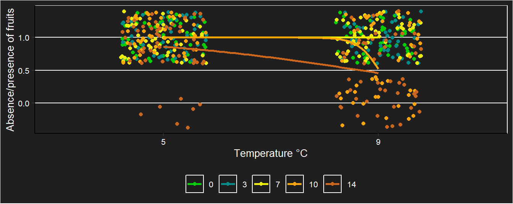
pH
Model
## Call:
## aov(formula = pH ~ DIA * TEMP, data = datac)
##
## Terms:
## DIA TEMP DIA:TEMP Residuals
## Sum of Squares 0.1801333333 0.0022222222 0.0016444444 0.0458000000
## Deg. of Freedom 2 1 2 12
##
## Residual standard error: 0.0617791766
## Estimated effects may be unbalancedAssumptions

##
## Shapiro-Wilk normality test
##
## data: e
## W = 0.9398241, p-value = 0.287784Anova
## Analysis of Variance Table
##
## Response: pH
## Df Sum Sq Mean Sq F value Pr(>F)
## DIA 2 0.18013333 0.09006667 23.59825 6.9392e-05 ***
## TEMP 1 0.00222222 0.00222222 0.58224 0.46017
## DIA:TEMP 2 0.00164444 0.00082222 0.21543 0.80925
## Residuals 12 0.04580000 0.00381667
## ---
## Signif. codes: 0 '***' 0.001 '**' 0.01 '*' 0.05 '.' 0.1 ' ' 1There is no evidence of interaction. Significant differences were only found between days.
Principal effects
## contrast estimate SE df lower.CL upper.CL
## DIA0 - DIA7 0.1733333333 0.0356682243 12 0.0781753743 0.268491292
## DIA0 - DIA14 0.2366666667 0.0356682243 12 0.1415087076 0.331824626
## DIA7 - DIA14 0.0633333333 0.0356682243 12 -0.0318246257 0.158491292
##
## Results are averaged over the levels of: TEMP
## Confidence level used: 0.95
## Conf-level adjustment: tukey method for comparing a family of 3 estimatesDay zero was statistically different from the other days.
Soluble solids
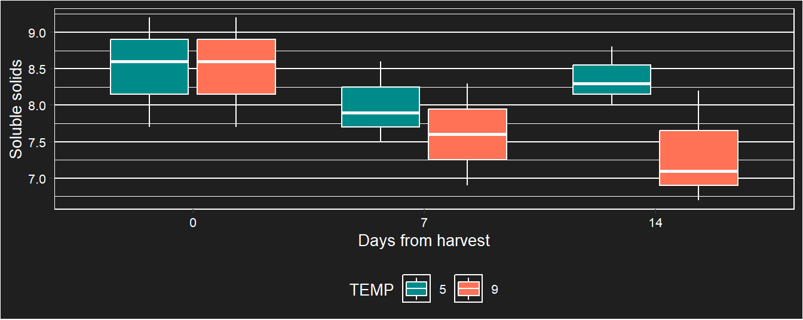
Model
## Call:
## aov(formula = SS ~ DIA * TEMP, data = datac)
##
## Terms:
## DIA TEMP DIA:TEMP Residuals
## Sum of Squares 1.83000000 1.02722222 0.81444444 5.41333333
## Deg. of Freedom 2 1 2 12
##
## Residual standard error: 0.671648056
## Estimated effects may be unbalancedAssumptions
##
## Shapiro-Wilk normality test
##
## data: e
## W = 0.9260424, p-value = 0.165366Anova
## Analysis of Variance Table
##
## Response: SS
## Df Sum Sq Mean Sq F value Pr(>F)
## DIA 2 1.830000 0.9150000 2.02833 0.17424
## TEMP 1 1.027222 1.0272222 2.27709 0.15717
## DIA:TEMP 2 0.814444 0.4072222 0.90271 0.43131
## Residuals 12 5.413333 0.4511111No significant differences were found.
Total titratable acidity
Model
## Call:
## aov(formula = Ac ~ DIA * TEMP, data = datac)
##
## Terms:
## DIA TEMP DIA:TEMP Residuals
## Sum of Squares 0.942535111 0.000227556 0.016839111 1.815893333
## Deg. of Freedom 2 1 2 12
##
## Residual standard error: 0.389004427
## Estimated effects may be unbalancedAssumptions
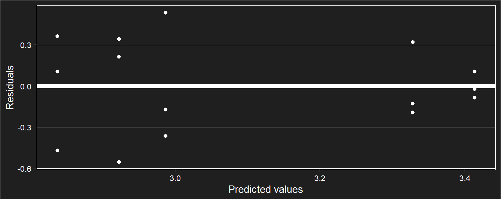
##
## Shapiro-Wilk normality test
##
## data: e
## W = 0.9531995, p-value = 0.477388Anova
## Analysis of Variance Table
##
## Response: Ac
## Df Sum Sq Mean Sq F value Pr(>F)
## DIA 2 0.9425351 0.4712676 3.11429 0.08139 .
## TEMP 1 0.0002276 0.0002276 0.00150 0.96970
## DIA:TEMP 2 0.0168391 0.0084196 0.05564 0.94612
## Residuals 12 1.8158933 0.1513244
## ---
## Signif. codes: 0 '***' 0.001 '**' 0.01 '*' 0.05 '.' 0.1 ' ' 1No significant differences were found.
Summary table

General graphs

## [1] "this_label"